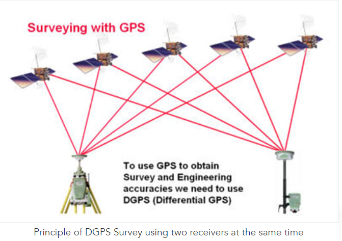

A Differential Global Positioning System (DGPS) is an enhancement to the Global Positioning System (GPS) which provides improved location accuracy, in the range of operations of each system, from the 15-meter nominal GPS accuracy to about 1-3 cm in case of the best implementations. Each DGPS uses a network of fixed ground-based reference stations to broadcast the difference between the positions indicated by the GPS satellite system and known fixed positions. These stations broadcast the difference between the measured satellite pseudo ranges and actual (internally computed) pseudo ranges, and receiver stations may correct their pseudo ranges by the same amount. The digital correction signal is typically broadcast locally over ground-based transmitters of shorter range.
